2025 Higher Physics - Paper 1 questions
Source: Scottish Qualifications Authority (SQA) / Qualifications Scotland. This is a StemInteract HTML companion, not an official HTML edition. Selectable text is supplied alongside original page images. Use the images or original PDF for equations, powers, fractions, vector notation, tables and diagrams; text extraction cannot fully preserve mathematical layout.
Jump to a question
PDF page 1
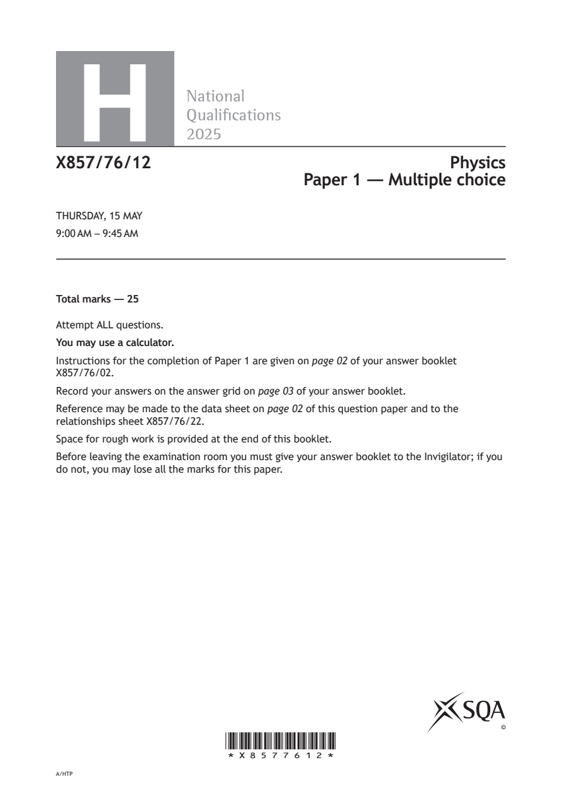
Selectable page text
H
National
Qualications
2025
X857/76/12 Physics
Paper 1 — Multiple choice
THURSDAY, 15 MAY
9:00 AM – 9:45 AM
Total marks — 25
Attempt ALL questions.
You may use a calculator.
Instructions for the completion of Paper 1 are given on page 02 of your answer booklet
X857/76/02.
Record your answers on the answer grid on page 03 of your answer booklet.
Reference may be made to the data sheet on page 02 of this question paper and to the
relationships sheet X857/76/22.
Space for rough work is provided at the end of this booklet.
Before leaving the examination room you must give your answer booklet to the Invigilator; if you
do not, you may lose all the marks for this paper.
©
*X8577612*
A/HTPPDF page 2

Selectable page text
DATA SHEET
COMMON PHYSICAL QUANTITIES
Quantity Symbol Value Quantity Symbol Value
Speed of light in
vacuum c 3.00 × 10⁸ m s⁻¹ Planck’s constant h 6.63 × 10⁻³⁴ J s
Magnitude of the
charge on an electron e 1.60 × 10⁻¹⁹ C Mass of electron mₑ 9.11 × 10⁻³¹ kg
Universal Constant of
Gravitation G 6.67 × 10⁻¹¹ m³ kg⁻¹ s⁻² Mass of neutron mₙ 1.675 × 10⁻²⁷ kg
Gravitational
acceleration on Earth g 9.8 m s⁻² Mass of proton mₚ 1.673 × 10⁻²⁷ kg
Speed of sound in
Hubble’s constant H₀ 2.3 × 10⁻¹⁸ s⁻¹ air vₐᵢᵣ 3.40 × 10² m s⁻¹
REFRACTIVE INDICES
The refractive indices refer to sodium light of wavelength 589 nm and to substances at a temperature of 273 K.
Substance Refractive index Substance Refractive index
Diamond 2.42 Water 1.33
Crown glass 1.50 Air 1.00
SPECTRAL LINES
Element Wavelength (nm) Colour Element Wavelength (nm) Colour
Hydrogen 656 Red Cadmium 644 Red
486 Blue-green 509 Green
434 Blue-violet 480 Blue
410 Violet
Lasers
397 Ultraviolet
389 Ultraviolet Element Wavelength (nm) Colour
Carbon dioxide 9550} Infrared
Sodium 589 Yellow 10 590
Helium-neon 633 Red
PROPERTIES OF SELECTED MATERIALS
Substance Density (kg m⁻³) Melting point (K) Boiling point (K)
Aluminium 2.70 × 10³ 933 2623
Copper 8.96 × 10³ 1357 2853
Ice 9.20 × 10² 273 . . . .
Sea Water 1.02 × 10³ 264 377
Water 1.00 × 10³ 273 373
Air 1.29 . . . . . . . .
Hydrogen 9.0 × 10⁻² 14 20
The gas densities refer to a temperature of 273 K and a pressure of 1.01 × 10⁵ Pa.
page 02PDF page 3
Paper 1, Question 1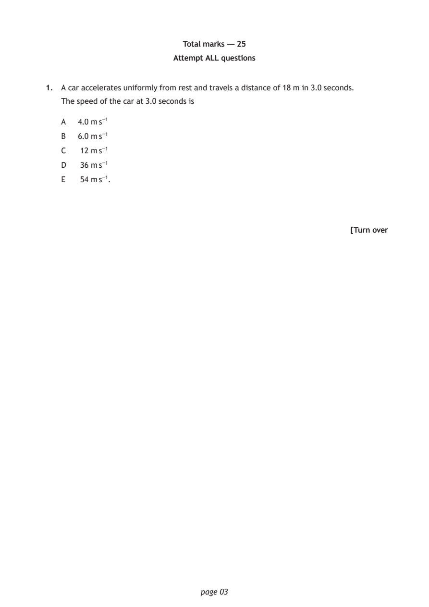
Selectable page text
Total marks — 25
Attempt ALL questions
1. A car accelerates uniformly from rest and travels a distance of 18 m in 3.0 seconds.
The speed of the car at 3.0 seconds is
A 4.0 m s⁻¹
B 6.0 m s⁻¹
C 12 m s⁻¹
D 36 m s⁻¹
E 54 m s⁻¹.
[Turn over
page 03PDF page 4
Paper 1, Question 2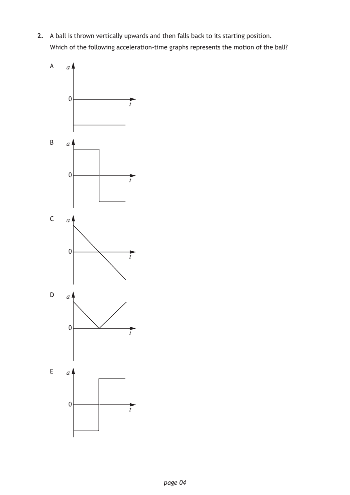
Selectable page text
2. A ball is thrown vertically upwards and then falls back to its starting position.
Which of the following acceleration-time graphs represents the motion of the ball?
A a
0
t
B a
0
t
C a
0
t
D a
0
t
E a
0
t
page 04PDF page 5
Paper 1, Question 3Paper 1, Question 4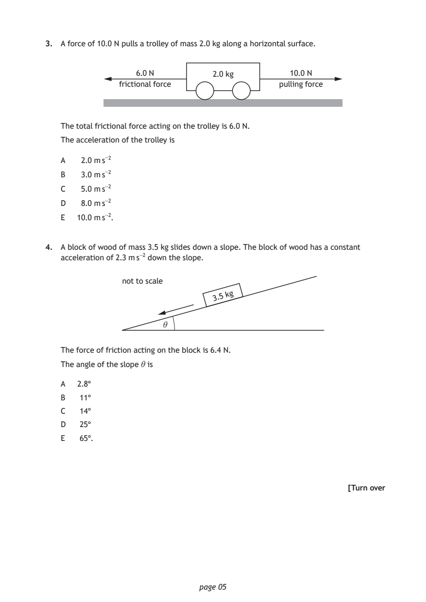
Selectable page text
3. A force of 10.0 N pulls a trolley of mass 2.0 kg along a horizontal surface.
6.0 N 2.0 kg 10.0 N
frictional force pulling force
The total frictional force acting on the trolley is 6.0 N.
The acceleration of the trolley is
A 2.0 m s⁻²
B 3.0 m s⁻²
C 5.0 m s⁻²
D 8.0 m s⁻²
E 10.0 m s⁻².
4. A block of wood of mass 3.5 kg slides down a slope. The block of wood has a constant
acceleration of 2.3 m s⁻² down the slope.
not to scale
3.5
kg
θ
The force of friction acting on the block is 6.4 N.
The angle of the slope θ is
A 2.8°
B 11°
C 14°
D 25°
E 65°.
[Turn over
page 05PDF page 6
Paper 1, Question 5Paper 1, Question 6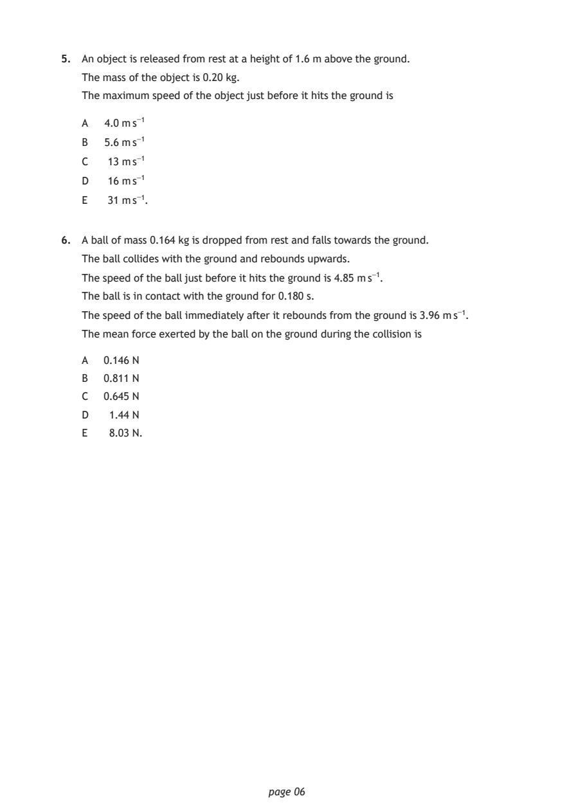
Selectable page text
5. An object is released from rest at a height of 1.6 m above the ground.
The mass of the object is 0.20 kg.
The maximum speed of the object just before it hits the ground is
A 4.0 m s⁻¹
B 5.6 m s⁻¹
C 13 m s⁻¹
D 16 m s⁻¹
E 31 m s⁻¹.
6. A ball of mass 0.164 kg is dropped from rest and falls towards the ground.
The ball collides with the ground and rebounds upwards.
The speed of the ball just before it hits the ground is 4.85 m s⁻¹.
The ball is in contact with the ground for 0.180 s.
The speed of the ball immediately after it rebounds from the ground is 3.96 m s⁻¹.
The mean force exerted by the ball on the ground during the collision is
A 0.146 N
B 0.811 N
C 0.645 N
D 1.44 N
E 8.03 N.
page 06PDF page 7
Paper 1, Question 7Paper 1, Question 8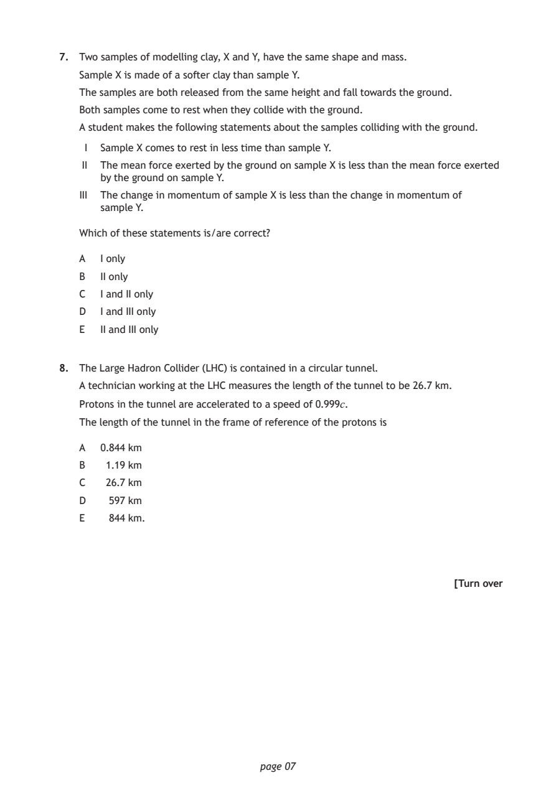
Selectable page text
7. Two samples of modelling clay, X and Y, have the same shape and mass.
Sample X is made of a softer clay than sample Y.
The samples are both released from the same height and fall towards the ground.
Both samples come to rest when they collide with the ground.
A student makes the following statements about the samples colliding with the ground.
I Sample X comes to rest in less time than sample Y.
II The mean force exerted by the ground on sample X is less than the mean force exerted
by the ground on sample Y.
III The change in momentum of sample X is less than the change in momentum of
sample Y.
Which of these statements is/are correct?
A I only
B II only
C I and II only
D I and III only
E II and III only
8. The Large Hadron Collider (LHC) is contained in a circular tunnel.
A technician working at the LHC measures the length of the tunnel to be 26.7 km.
Protons in the tunnel are accelerated to a speed of 0.999c.
The length of the tunnel in the frame of reference of the protons is
A 0.844 km
B 1.19 km
C 26.7 km
D 597 km
E 844 km.
[Turn over
page 07PDF page 8
Paper 1, Question 9Paper 1, Question 10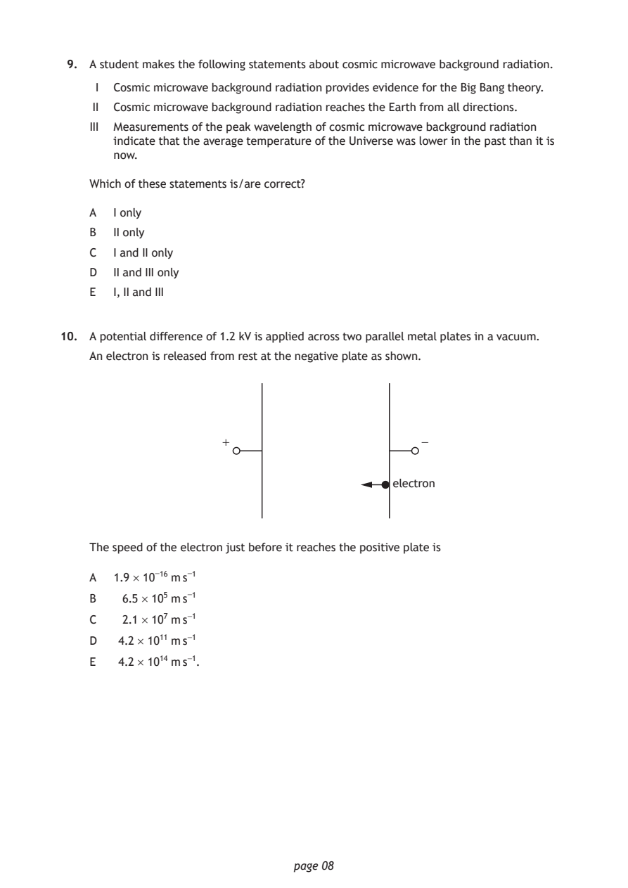
Selectable page text
9. A student makes the following statements about cosmic microwave background radiation.
I Cosmic microwave background radiation provides evidence for the Big Bang theory.
II Cosmic microwave background radiation reaches the Earth from all directions.
III Measurements of the peak wavelength of cosmic microwave background radiation
indicate that the average temperature of the Universe was lower in the past than it is
now.
Which of these statements is/are correct?
A I only
B II only
C I and II only
D II and III only
E I, II and III
10. A potential difference of 1.2 kV is applied across two parallel metal plates in a vacuum.
An electron is released from rest at the negative plate as shown.
+ −
electron
The speed of the electron just before it reaches the positive plate is
A 1.9 × 10⁻¹⁶ m s⁻¹
B 6.5 × 10⁵ m s⁻¹
C 2.1 × 10⁷ m s⁻¹
D 4.2 × 10¹¹ m s⁻¹
E 4.2 × 10¹⁴ m s⁻¹.
page 08PDF page 9
Paper 1, Question 11Paper 1, Question 12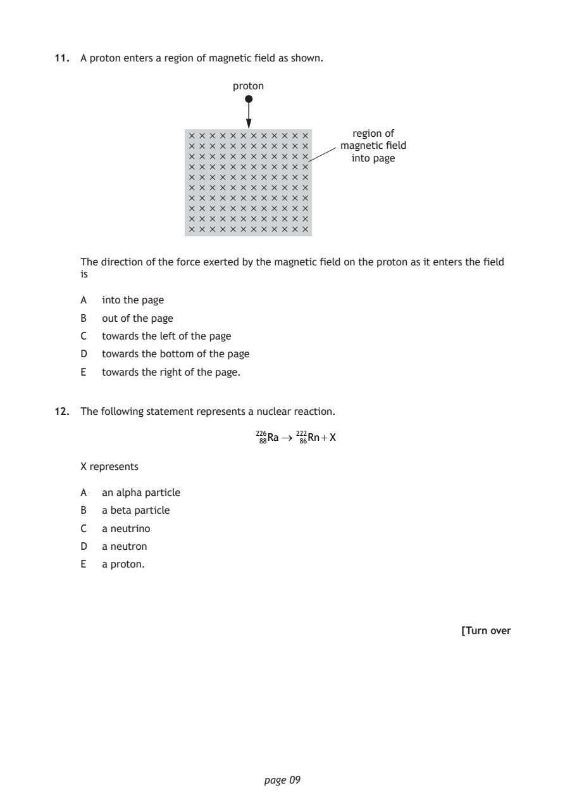
Selectable page text
11. A proton enters a region of magnetic field as shown.
proton
region of
magnetic field
into page
The direction of the force exerted by the magnetic field on the proton as it enters the field
is
A into the page
B out of the page
C towards the left of the page
D towards the bottom of the page
E towards the right of the page.
12. The following statement represents a nuclear reaction.
226Ra 222Rn+X
88 86
X represents
A an alpha particle
B a beta particle
C a neutrino
D a neutron
E a proton.
[Turn over
page 09PDF page 10
Paper 1, Question 13Paper 1, Question 14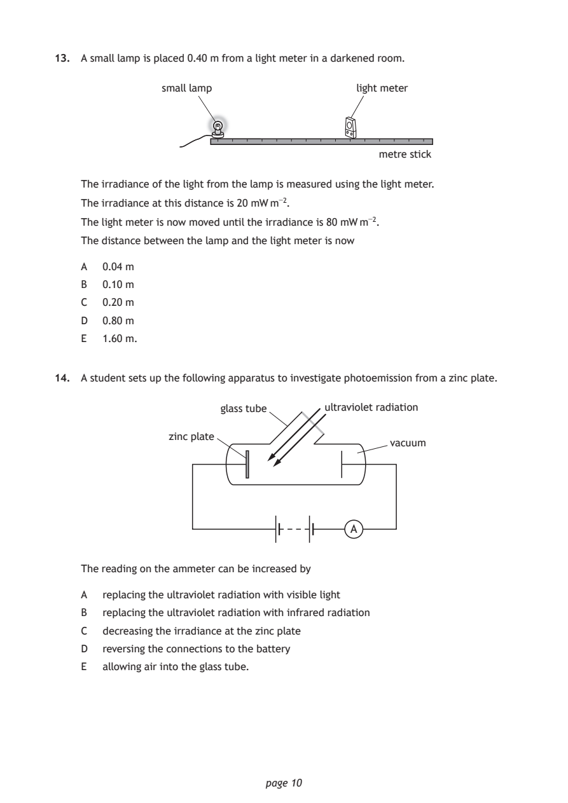
Selectable page text
13. A small lamp is placed 0.40 m from a light meter in a darkened room.
small lamp light meter
metre stick
The irradiance of the light from the lamp is measured using the light meter.
The irradiance at this distance is 20 mW m⁻².
The light meter is now moved until the irradiance is 80 mW m⁻².
The distance between the lamp and the light meter is now
A 0.04 m
B 0.10 m
C 0.20 m
D 0.80 m
E 1.60 m.
14. A student sets up the following apparatus to investigate photoemission from a zinc plate.
glass tube ultraviolet radiation
zinc plate
vacuum
A
The reading on the ammeter can be increased by
A replacing the ultraviolet radiation with visible light
B replacing the ultraviolet radiation with infrared radiation
C decreasing the irradiance at the zinc plate
D reversing the connections to the battery
E allowing air into the glass tube.
page 10PDF page 11
Paper 1, Question 15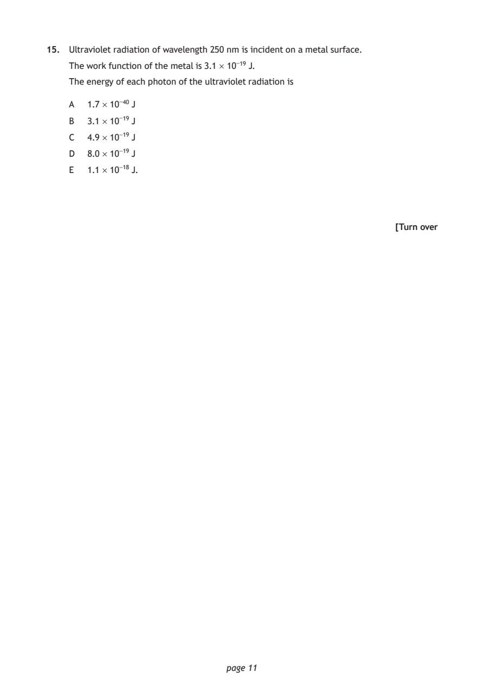
Selectable page text
15. Ultraviolet radiation of wavelength 250 nm is incident on a metal surface.
The work function of the metal is 3.1 × 10⁻¹⁹ J.
The energy of each photon of the ultraviolet radiation is
A 1.7 × 10⁻⁴⁰ J
B 3.1 × 10⁻¹⁹ J
C 4.9 × 10⁻¹⁹ J
D 8.0 × 10⁻¹⁹ J
E 1.1 × 10⁻¹⁸ J.
[Turn over
page 11PDF page 12
Paper 1, Question 16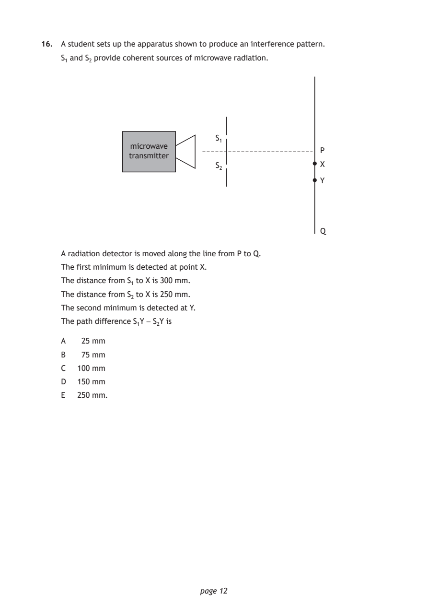
Selectable page text
16. A student sets up the apparatus shown to produce an interference pattern.
S₁ and S₂ provide coherent sources of microwave radiation.
S₁
microwave
P
transmitter
S₂ X
Y
Q
A radiation detector is moved along the line from P to Q.
The first minimum is detected at point X.
The distance from S₁ to X is 300 mm.
The distance from S₂ to X is 250 mm.
The second minimum is detected at Y.
The path difference S₁Y − S₂Y is
A 25 mm
B 75 mm
C 100 mm
D 150 mm
E 250 mm.
page 12PDF page 13
Paper 1, Question 17Paper 1, Question 18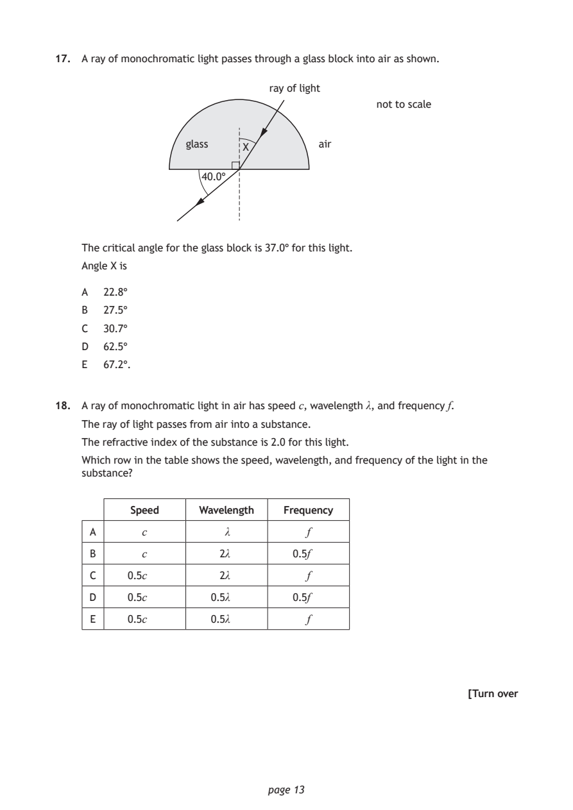
Selectable page text
17. A ray of monochromatic light passes through a glass block into air as shown.
ray of light
not to scale
glass air
X
40.0°
The critical angle for the glass block is 37.0° for this light.
Angle X is
A 22.8°
B 27.5°
C 30.7°
D 62.5°
E 67.2°.
18. A ray of monochromatic light in air has speed c, wavelength λ, and frequency f.
The ray of light passes from air into a substance.
The refractive index of the substance is 2.0 for this light.
Which row in the table shows the speed, wavelength, and frequency of the light in the
substance?
Speed Wavelength Frequency
A c λ f
B c 2λ 0.5f
C 0.5c 2λ f
D 0.5c 0.5λ 0.5f
E 0.5c 0.5λ f
[Turn over
page 13PDF page 14
Paper 1, Question 19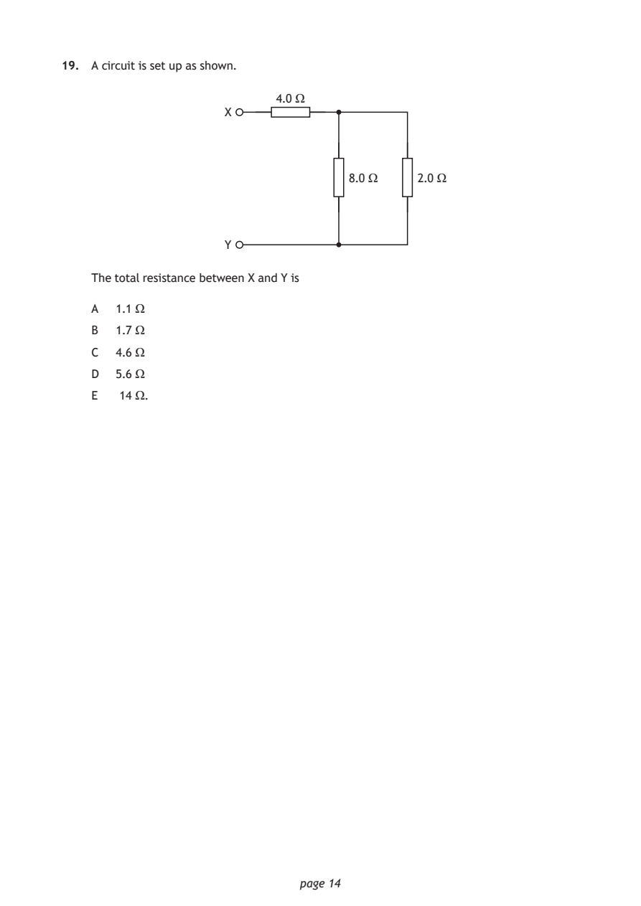
Selectable page text
19. A circuit is set up as shown.
4.0 Ω
X
8.0 Ω 2.0 Ω
Y
The total resistance between X and Y is
A 1.1 Ω
B 1.7 Ω
C 4.6 Ω
D 5.6 Ω
E 14 Ω.
page 14PDF page 15
Paper 1, Question 20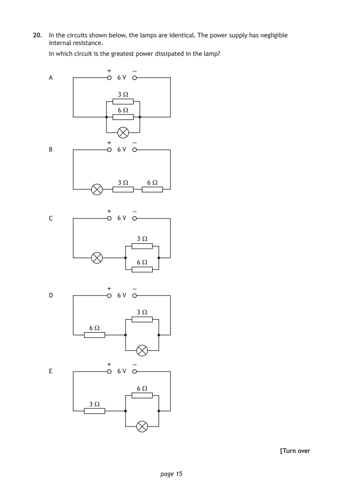
Selectable page text
20. In the circuits shown below, the lamps are identical. The power supply has negligible
internal resistance.
In which circuit is the greatest power dissipated in the lamp?
+ –
A 6 V
3 Ω
6 Ω
+ –
B 6 V
3 Ω 6 Ω
+ –
C 6 V
3 Ω
6 Ω
+ –
D 6 V
3 Ω
6 Ω
+ –
E 6 V
6 Ω
3 Ω
[Turn over
page 15PDF page 16
Paper 1, Question 21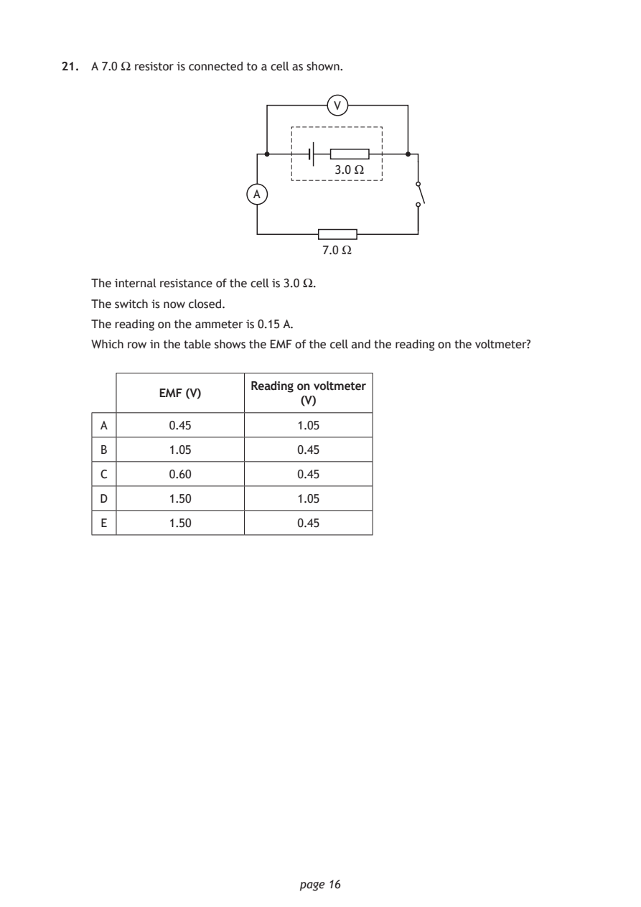
Selectable page text
21. A 7.0 Ω resistor is connected to a cell as shown.
V
3.0 Ω
A
7.0 Ω
The internal resistance of the cell is 3.0 Ω.
The switch is now closed.
The reading on the ammeter is 0.15 A.
Which row in the table shows the EMF of the cell and the reading on the voltmeter?
Reading on voltmeter
EMF (V)
(V)
A 0.45 1.05
B 1.05 0.45
C 0.60 0.45
D 1.50 1.05
E 1.50 0.45
page 16PDF page 17
Paper 1, Question 22Paper 1, Question 23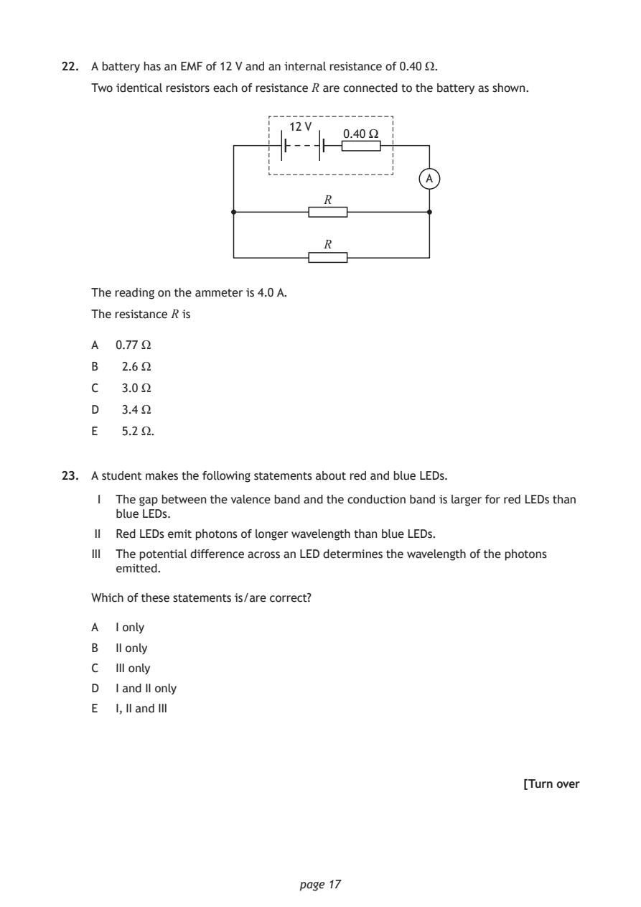
Selectable page text
22. A battery has an EMF of 12 V and an internal resistance of 0.40 Ω.
Two identical resistors each of resistance R are connected to the battery as shown.
12 V
0.40 Ω
A
R
R
The reading on the ammeter is 4.0 A.
The resistance R is
A 0.77 Ω
B 2.6 Ω
C 3.0 Ω
D 3.4 Ω
E 5.2 Ω.
23. A student makes the following statements about red and blue LEDs.
I The gap between the valence band and the conduction band is larger for red LEDs than
blue LEDs.
II Red LEDs emit photons of longer wavelength than blue LEDs.
III The potential difference across an LED determines the wavelength of the photons
emitted.
Which of these statements is/are correct?
A I only
B II only
C III only
D I and II only
E I, II and III
[Turn over
page 17PDF page 18
Paper 1, Question 24Paper 1, Question 25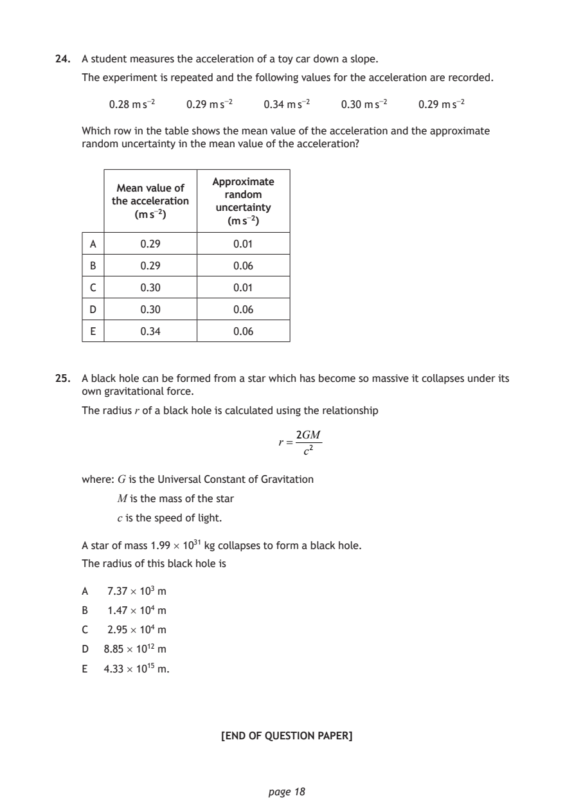
Selectable page text
24. A student measures the acceleration of a toy car down a slope.
The experiment is repeated and the following values for the acceleration are recorded.
0.28 m s⁻² 0.29 m s⁻² 0.34 m s⁻² 0.30 m s⁻² 0.29 m s⁻²
Which row in the table shows the mean value of the acceleration and the approximate
random uncertainty in the mean value of the acceleration?
Approximate
Mean value of
random
the acceleration
uncertainty
(m s⁻²)
(m s⁻²)
A 0.29 0.01
B 0.29 0.06
C 0.30 0.01
D 0.30 0.06
E 0.34 0.06
25. A black hole can be formed from a star which has become so massive it collapses under its
own gravitational force.
The radius r of a black hole is calculated using the relationship
2GM
r =
c²
where: G is the Universal Constant of Gravitation
M is the mass of the star
c is the speed of light.
A star of mass 1.99 × 10³¹ kg collapses to form a black hole.
The radius of this black hole is
A 7.37 × 10³ m
B 1.47 × 10⁴ m
C 2.95 × 10⁴ m
D 8.85 × 10¹² m
E 4.33 × 10¹⁵ m.
[END OF QUESTION PAPER]
page 18PDF page 19

Selectable page text
SPACE FOR ROUGH WORK
page 19PDF page 20

Selectable page text
SPACE FOR ROUGH WORK
page 20